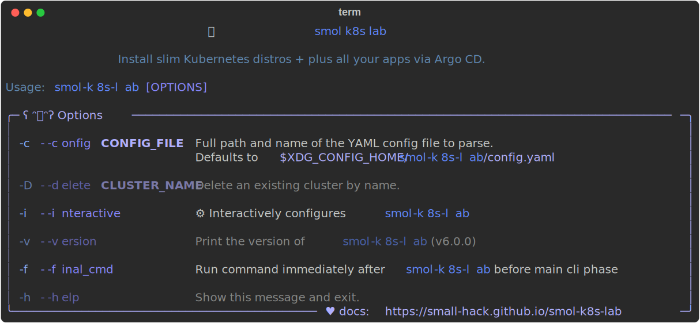

Installation
Note
smol-k8s-lab is only tested on Debian, Ubuntu, and macOS. It may run on other Linux distros and even WSL, but we do not actively test them at this time.
Install via brew
brew is the preferred installation method for macOS/Debian/Ubuntu, as this will also install any prerequisites you need.
1 2 | |
Then you should be able to check the version and cli options with:
1 | |
Install via pipx
Prerequisites
Required
smol-k8s-lab cannot function without at least the following installed:
Optional
All of these are not Required for core functionality of smol-k8s-lab, but they greatly enhance the experience, so they are still recommended.
| application | description |
|---|---|
| docker | needed for k3d, kind, and installing the mastodon app |
| bw | only if you want to use Bitwarden to store your passwords |
| k3d | only if you want to use k3d |
| k9s | only if you want a k8s TUI for viewing an already installed cluster |
| kind | only if you want to use kind |
| mc | only if you want smol-k8s-lab to create MinIO users and buckets for you |
| [restic] | only if you want smol-k8s-lab to restore backups for you for select apps |
pipx
smol-k8s-lab requires Python 3.11+ (and pipx). If you've already got both and other pre-reqs, you should be able to:
1 2 3 4 5 | |
Help text example
{kind=link}
Usage
Initialization
After you've followed the installation instructions, if you're new to smol-k8s-lab, initialize a new config file by running:
1 2 3 | |
Upgrading to v1.x, v2.x, v3.x
If you've installed smol-k8s-lab prior to v3.0.0, please backup your old configuration, ~/.config/smol-k8s-lab/config.yaml (or $XDG_CONFIG_HOME/smol-k8s-lab/config.yaml), and then remove the file entirely. Then, run the following if you're using pip:
1 2 3 4 5 | |
1 2 3 4 5 | |
Creating a new config without running smol-k8s-lab
This is helpful if you just want to take a look at the default configuration before installing any Kubernetes distros. This will also allow you to disable any default applications you'd like ahead of time.
1 2 3 4 5 6 7 8 | |
You can now use your text editor of choice to view and edit the default config before running smol-k8s-lab :)
Configuration
You can checkout the default config file as well as our config file docs.
We also highly recommend checking out the TUI (Terminal User Interface) for you to jump right in :)
Finally, for more info on applications we install, checkout default apps.